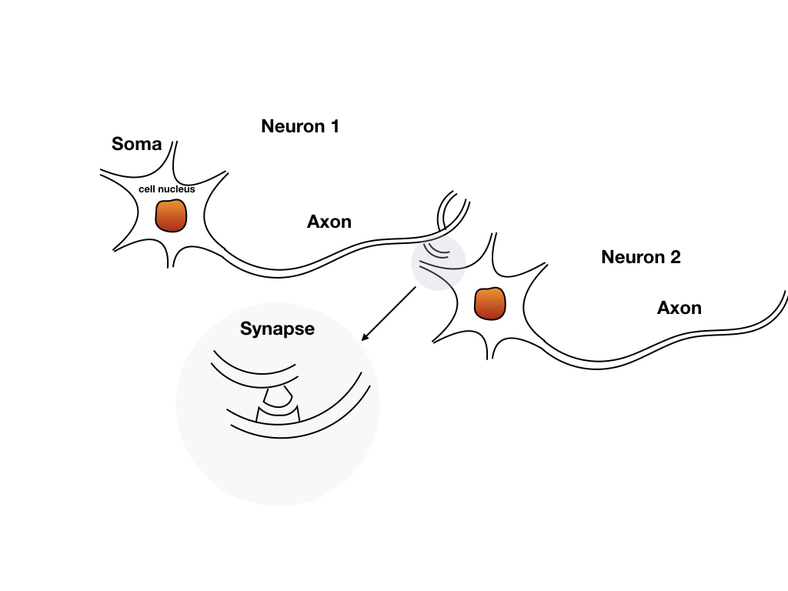
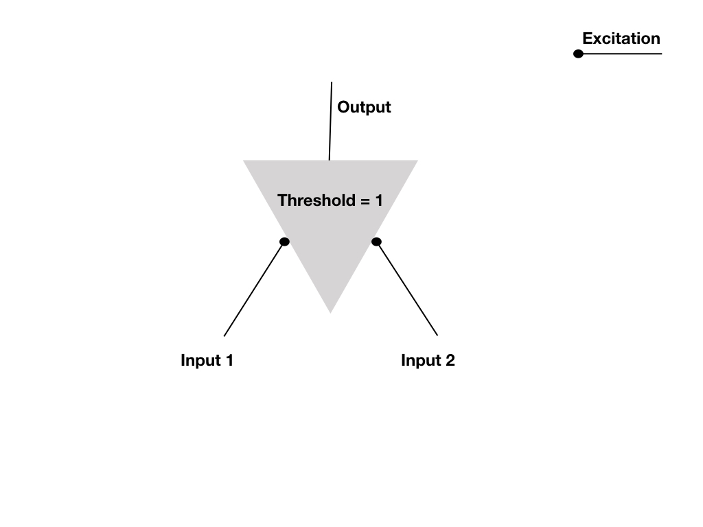
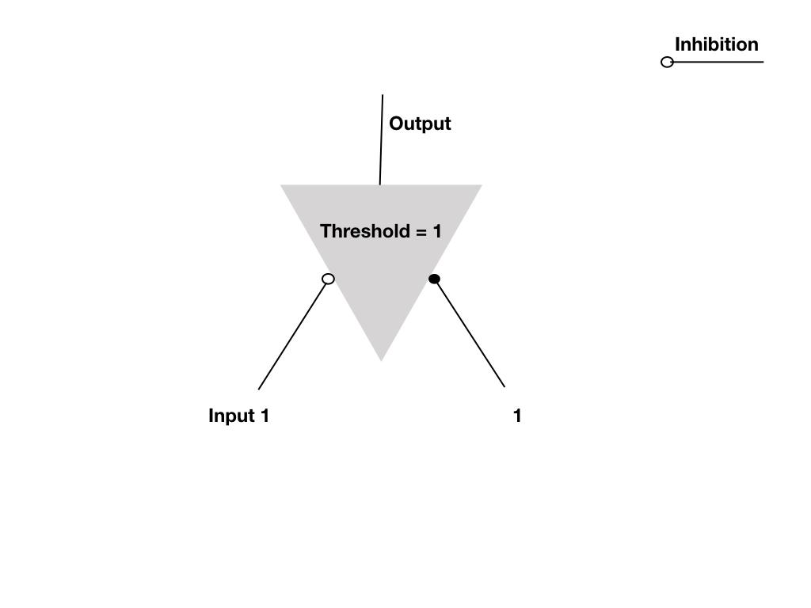

A Logical Calculus of the Ideas Immanent in Nervous Activity
Keywords: logical calculus
Summary
This paper was published in 1943 by Warren S. McCulloch and Walter Pitts.[1] It has been considered as the origin of the neural network field. It contains the background knowledge of biological neural networks of that time. Basing on these biological neural network structure details, authors discarded some “unimportant” or “uncomputable” structures and simplified some complicated structures then get an abstracted model that may have a simple function and could be analyzed mathematically.
The paper first described the structure of biological neural networks. And then gave the model of a single neuron, which can be used to develop a complicated network, under some reasonable assumptions. And after observing the reaction of the network, they found the connection between the neuron network and the logical proposition. And the discussed two different kinds of structures whose distinction is whether containing a circle in the structure.
Some theorems were brought up and proofed in the paper as well and they were all about the neural network and logical proposition.
This paper is considered as the very first of artificial neural network, and war written in an old kind of language. So, it is not easy to read. However, there is another document which is to explain the whole paper named “Representation of Events in Nerve Nets and Finite Automata” written by S. C. Kleene in 1951[2]. There are more than 1 hundred pages in the document and giving a very detailed interpretation.
In these papers, the authors want to build a connection between neural networks and logical propositions. This is because:
- the input and output should be easy to calculate, for at that time a computer is not available. So, 1 and 0 is a good choice. When input and output are all 0s and 1s, the logical operation comes to mind at first.
- logic is a powerful tool at that time and is believed to have a relation with intelligence.
- they can not take every structure into the model, for example, synapses had no weights which means every synapse has the same influence on the whole neuron.
In their model, the following properties of a neuron are taken into account:
- some inputs from synapses
- threshold
- inhibition and excitation
- arbitrary connections between neurons
- circles and non-circles structure.
and others are not concerned, like the duration of impulse and different types of neurons and so on.
Background of Biological Neural Networks
All the concepts and descriptions below come from the 1943 paper “A Logical Calculus of the Ideas Immanent in Nervous Activity”. So some of them may be altered for these 76 years to now.
A nervous system is made up of a net of neurons, and the elements of the system, the neurons, give the system possible abilities. So a single neuron should be investigated first.

A neuron is made of soma, axon and in the soma, there is cell nucleus ，cytoplasm and other cell components. They connect through a component called the synapse, and there are so many synapses between neurons, and neurons can be connected to a lot of other neurons near it.
The simple structure of a neuron is easy to show, but the neurons have complicated actions. The nerve impulse is such an action, and it is also the way for neurons to communicate with each other. And the impulse is in the form of the electrical signal that is produced by the soma and goes to the axon and every part of the neuron. Impulse can not be pasted to other neurons directly by electrical signals. Their carriage between neurons is in a chemical form happening in the synapse. However, the details of how signals go from one neuron to another neuron are out of the paper’s scope.
Excitation: the process by which nerve cells fire their connected nerve cells after their synapses. In figure 1 only neuron 1 can excite neuron 2 but not vice versa.
Another key property of neuron is every one of the neurons has a threshold, that is to say, the soma receives chemical substance and translates it into electrical form, but this would not cause an impulse. If the summation of all electrical signals from all the synapses of the soma during a certain period is not more than the threshold the impulse cannot form.
The velocity of the impulse is different from neuron to neuron. It can be more than 150 meters per second in some think axons and can also be less than 1 meter per second in some thin axons. We concern about the velocity is just to make sure whether the impulse from a source to the same destination through different paths will take the same time.
Every neuron has almost the same structure. And when talk about threshold we mentioned ‘a period’, this period is not more than . So the information of the neural network won’t be stored in the sequence of the incoming signal but in the structure of the network.
Another process of the neuron on the contrary of excitation is inhibition. It is the process that a neuron or a group of neurons can be terminated or prevented by other neurons or another group of neurons by concurrent or antecedent activity. How inhibition works in not sure it may produce substance making threshold higher or disturbance make the whole mechanism fail.
The time of inhibition takes place less than that excludes internuncial transmission and the delay of a duration of synapses.
Neural networks are built of neurons and they can have a circular structure or not. Both of these two general structures are reasonable and feasible.
Excitation and inhibition are the main activities of the following simulation.
Other phenomenons of neurons are their different alternations:
- temporary alteration: facilitation or extinction
- permanent alteration: learning
these change the neuron in their ways which are not known for precise mechanisms.
Logical and Neural Networks
All-or-none is a property of neural networks, which is to say the network has only fire or unfired two stats. These two states can be represented as true and false. So the whole network is similar to a proposition that can be figured out whether it is true or false, or the network equals 1 or 0.
A neuron is the smallest unit of the neural networks, and if the neuron can cover all basic logic operations, the networks can be used to represent any logical propositions.
Here we can design a neuron to have different logic reactions by assigning different thresholds and synapses(input connections).
The simple operations ‘AND’ ‘OR’ and ‘NOT’ can define as:
| ‘AND’ | input 1 | input 2 | output |
|---|---|---|---|
| 0 | 0 | 0 | |
| 0 | 1 | 0 | |
| 1 | 0 | 0 | |
| 1 | 1 | 1 |

| ‘OR’ | input 1 | input 2 | output |
|---|---|---|---|
| 0 | 0 | 0 | |
| 0 | 1 | 1 | |
| 1 | 0 | 1 | |
| 1 | 1 | 1 |

| ‘NOT’ | input | output |
|---|---|---|
| 0 | 1 | |
| 1 | 0 |
Circles and Noncircles
Circle and Noncirles gave several theorems which concerned about finite and infinity input sequences in the paper, and I won’t talk all of them here.
Reference
McCulloch, Warren S., and Walter Pitts. “A logical calculus of the ideas immanent in nervous activity.” The bulletin of mathematical biophysics 5, no. 4 (1943): 115-133. ↩︎
Kleene, Stephen Cole. Representation of events in nerve nets and finite automata. No. RAND-RM-704. RAND PROJECT AIR FORCE SANTA MONICA CA, 1951. ↩︎